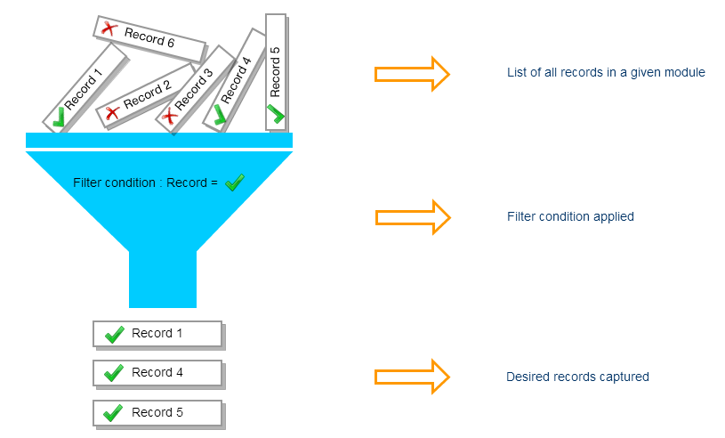
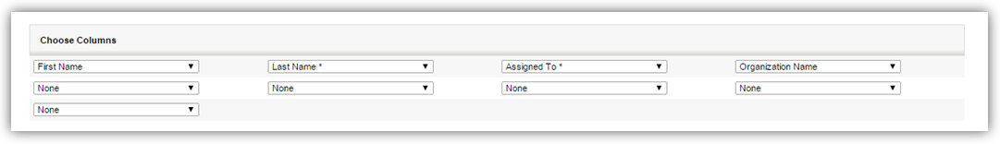
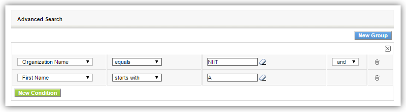
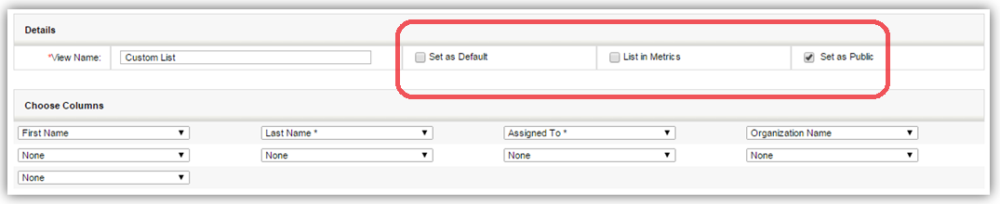

Filters, or views, are used to separate desired records from the stack of other records, and capture them in a different bucket. For instance, you can quickly filter all the records for a sector or sub sector. You can also perform operations on the filtered records like mass edit, delete, sending emails etc.

This tutorial is designed to explain how filters are created in PE Front Office. We'll explain you how filters can be created in Contacts module. You can follow the same steps to create filters on other modules.
- Click Contacts tab. The process is same for other modules: Organizations, etc.
- Click Create Filter link located above the List view.
- 3. You'll be navigated to create views of a filter's page. Provide a label to your filter in View Name field
- 4. Select desired columns you would like to see in a custom view. You can only select up to 9 columns.

- 5. You'll need to specify conditions to filter only specific entities that you would like to have in your custom view. The process of applying conditions to filter desired records has been made simple.

1. All Conditions : Filters records based on AND
condition.
For instance, Condition 1 AND Condition 2 AND Condition 3 Displays the results if and only if ALL conditions are matched. If one condition is failed, other queries will not be executed.
2. Any Conditions : Filters records based on OR condition.
For instance, Condition 1 OR Condition 2 OR Condition 3 Displays the results if at-least ONE condition is matched. If one query is failed, other queries will be executed.
Notes!
- By default, AND condition is enabled between ALL conditions and ANY conditions. This will help you in grouping the two conditions, all together.
- You can also filter the records on custom and default date fields. The conditions are dynamic. For instance, Today as filter condition will display all the records on current day. It will not display the same records tomorrow. It will display the records of present day instead.
- You can provide existing or custom criteria to filter records.
Providing Permissions
Now that you've successfully completed creating a filter, it's time to fit it to your business requirements. You have a wide variety of options to get the most out of the filter you've created.

- Set as Default
- You might have thousands of records in your PE Front Office. You don't deal with all of them. You can create filters and set the filter default so that you can view only most important records. By clicking on the check-box, the filter will be made default for you and other users in your PE Front Office account.
- List in Metrics
- You can have details of your filter right on your home page, too. Enable the check-box to view details of your filter in Key Metrics widget on the home page.
- Set as Public
- Enable the check-box to make the filter visible for all users across your PE Front Office account. If a non-admin user enables this option, the filter will be in a pending state until admin approves it. Admin users can approve the filter by clicking on icon next to the filter.
- 6. Once you're done, click on Save button. I hope that your filter has delivered results for you.